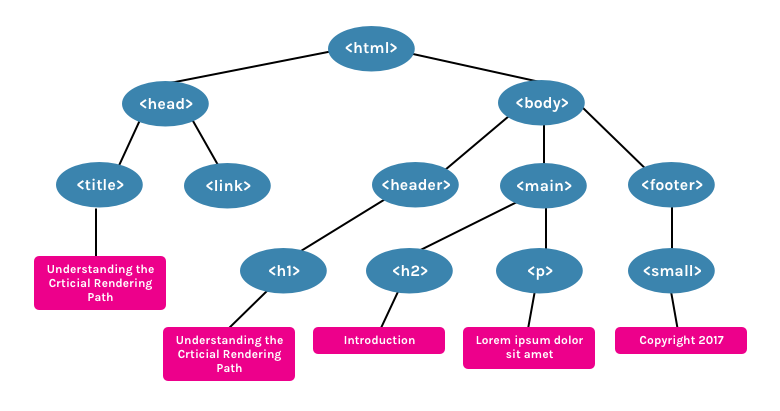

HTML stands for Hypertext Markup Language.
- HyperText is a text which contains links to other text.
- Markup languages are not the same as programming languages, they use tags to annotate documents.Markup tags are used to create the design of web pages.
- In other words, tags are used to markup your html file (normal text you are writing in your texteditor for html file) so browser know how to display the file on web.
- .html or .htm are extensions is used for writing HTML file, so we can write HTML code in any editor, and can save as filename.html or filename.htm.
When your computer opens a .html file, it knows to open it in an Internet browser (Chrome, Firefox, Safari, etc.). The browser can read this file and know how to display it on the screen.
Basic structure for HTML file on the right hand side is the tree representation of HTML structure or DOM.
Tags
- HTML tags are enclosed in angular brackets <tag-name>.
- They are two types of tags :
- Paired / Container Tag : Tags that contain both opening and closing tag like <Opening Tag>............(TEXT).........</Closing Tag>
- Singular / Self Closing Tags : Empty tags that come alone like <Self-containing-Tag/>